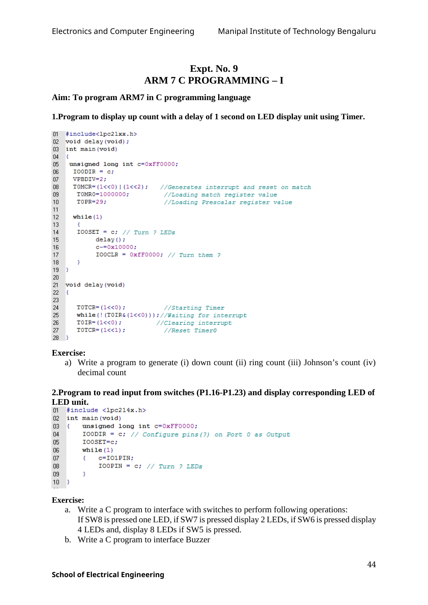
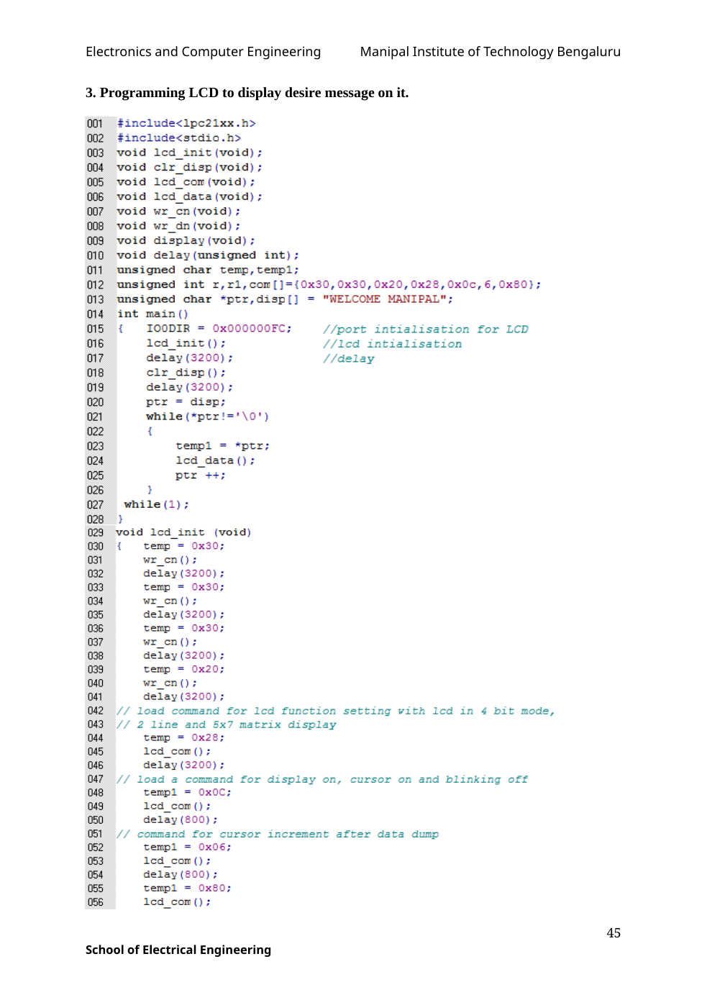

#include<lpc21xx.h>
#include<stdio.h>
void lcd_init(void);
void clr_disp(void);
void lcd_com(void);
void lcd_data(void);
void wr_cn(void);
void wr_dn(void);
void display(void);
void delay(unsigned int);
unsigned char temp,temp1;
unsigned int r,r1,com[]={0x30,0x30,0x20,0x28,0x0c,6,0x80};
unsigned char *ptr,disp[] = "WELCOME MANIPAL";
int main()
{ IO0DIR = 0x000000FC; //port intialisation for LCD
lcd_init(); //lcd intialisation
delay(3200); //delay
clr_disp();
delay(3200);
ptr = disp;
while(*ptr!='\0')
{
temp1 = *ptr;
lcd_data();
ptr ++;
}
while(1);
}
void lcd_init (void)
{ temp = 0x30;
wr_cn();
delay(3200);
temp = 0x30;
wr_cn();
delay(3200);
temp = 0x30;
wr_cn();
delay(3200);
temp = 0x20;
wr_cn();
delay(3200);
// load command for lcd function setting with lcd in 4 bit mode,
// 2 line and 5x7 matrix display
temp = 0x28;
lcd_com();
delay(3200);
// load a command for display on, cursor on and blinking off
temp1 = 0x0C;
lcd_com();
delay(800);
// command for cursor increment after data dump
temp1 = 0x06;
lcd_com();
delay(800);
temp1 = 0x80;
lcd_com();
delay(800);
}
void lcd_data(void)
{
temp = temp1 & 0xf0;
wr_dn();
temp= temp1 & 0x0f;
temp= temp << 4;
wr_dn();
delay(100);
}
void wr_dn(void) ////write data reg
{
IO0CLR = 0x000000FC; // clear the port lines.
IO0SET = temp; // Assign the value to the PORT lines
IO0SET = 0x00000004; // set bit RS = 1
IO0SET = 0x00000008; // E=1
delay(10);
IO0CLR = 0x00000008;
}
void lcd_com(void)
{
temp = temp1 & 0xf0;
wr_cn();
temp = temp1 & 0x0f;
temp = temp << 4;
wr_cn();
delay(500);
}
void wr_cn(void) //write command reg
{
IO0CLR = 0x000000FC; // clear the port lines.
IO0SET = temp; // Assign the value to the PORT lines
IO0CLR = 0x00000004; // clear bit RS = 0
IO0SET = 0x00000008; // E=1
delay(10);
IO0CLR = 0x00000008;
}
void clr_disp(void)
{
// command to clear lcd display
temp1 = 0x01;
lcd_com();
delay(500);
}
void delay(unsigned int r1)
{
for(r=0;r<r1;r++);
}
================================================================
EXP 10 : ARM 7 C PROGRAMMING - II
================================================================Original manual image(s)

